عناصر التصميم في سكراتش
تتضمن عناصر التصميم في برمجية سكراتش الكائنات، والخلفيات والأصوات.
أولًا: الكائنات (Sprites)
وضح المقصود بالكائن (Sprite)
أي شخصية أو شكل يستخدم في المشروع في برمجية Scratch.
من الأمثلة على الكائنات:
الحيوانات، والسيارات، والشخصيات الكرتونية، أو أي صور أخرى.
طرق استخدام الكائنات في سكراتش وإنشائها
توجد طرق عدة لاستخدام الكائنات في سكراتش (Scratch)، وإنشائها، وهذه الطرق هي:
- الطريقة الأولى: اختيار كائن من مكتبة سكراتش.
- الطريقة الثانية: رسم كائن جديد في برمجية سكراتش.
- الطريقة الثالثة: تحميل كائنات جاهزة.
- الطريقة الرابعة: اختيار الكائن بشكل عشوائي في برمجية سكراتش.
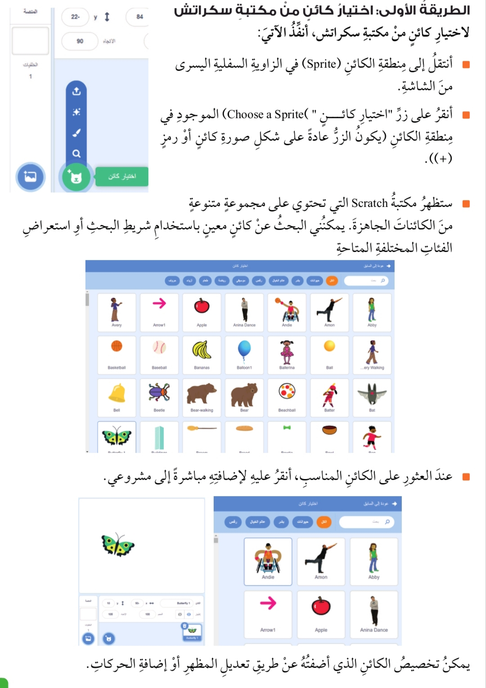
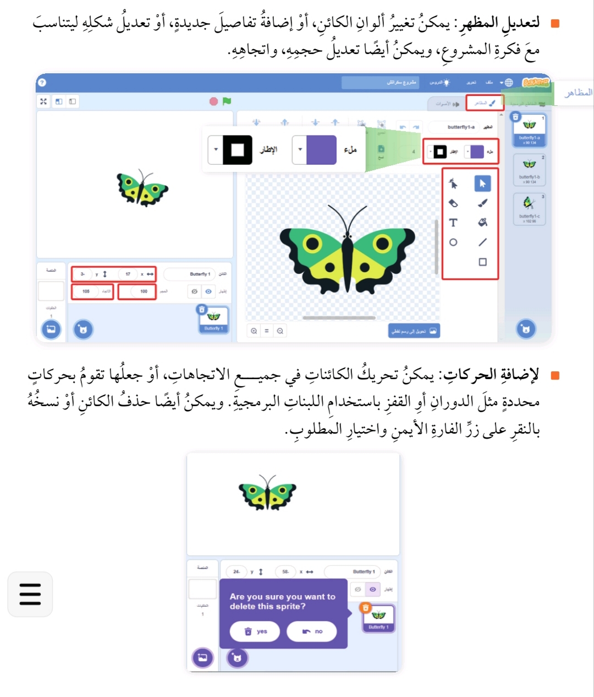
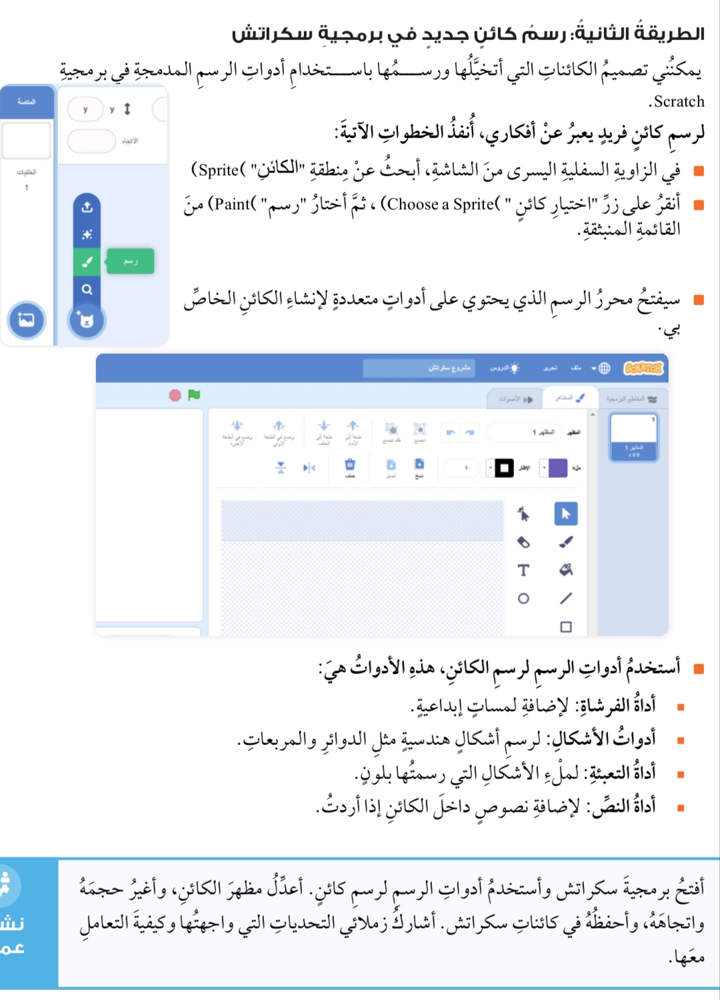
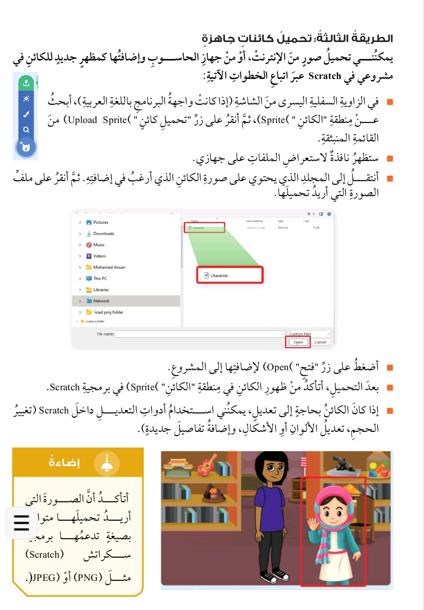
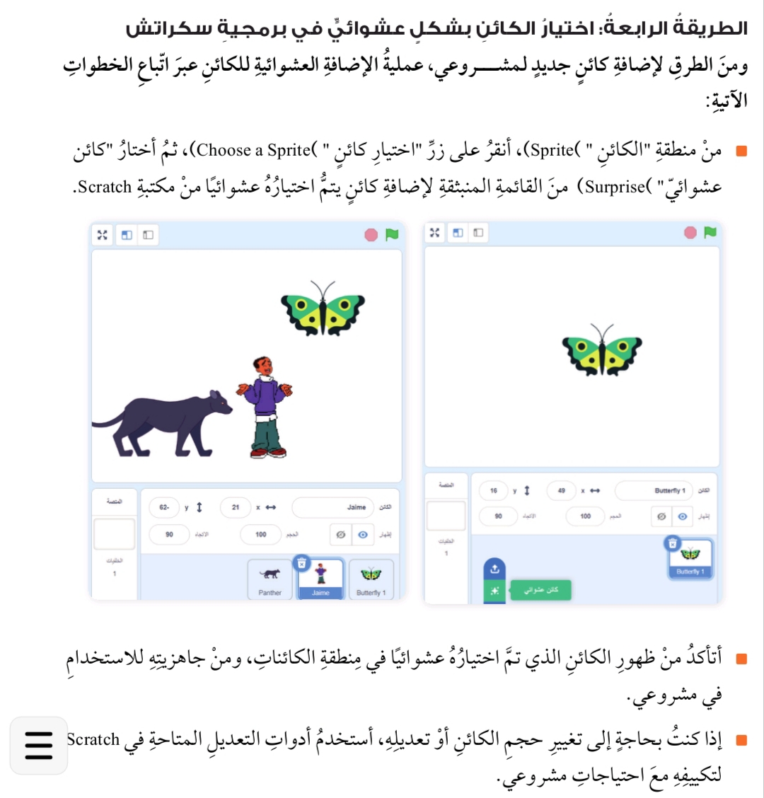
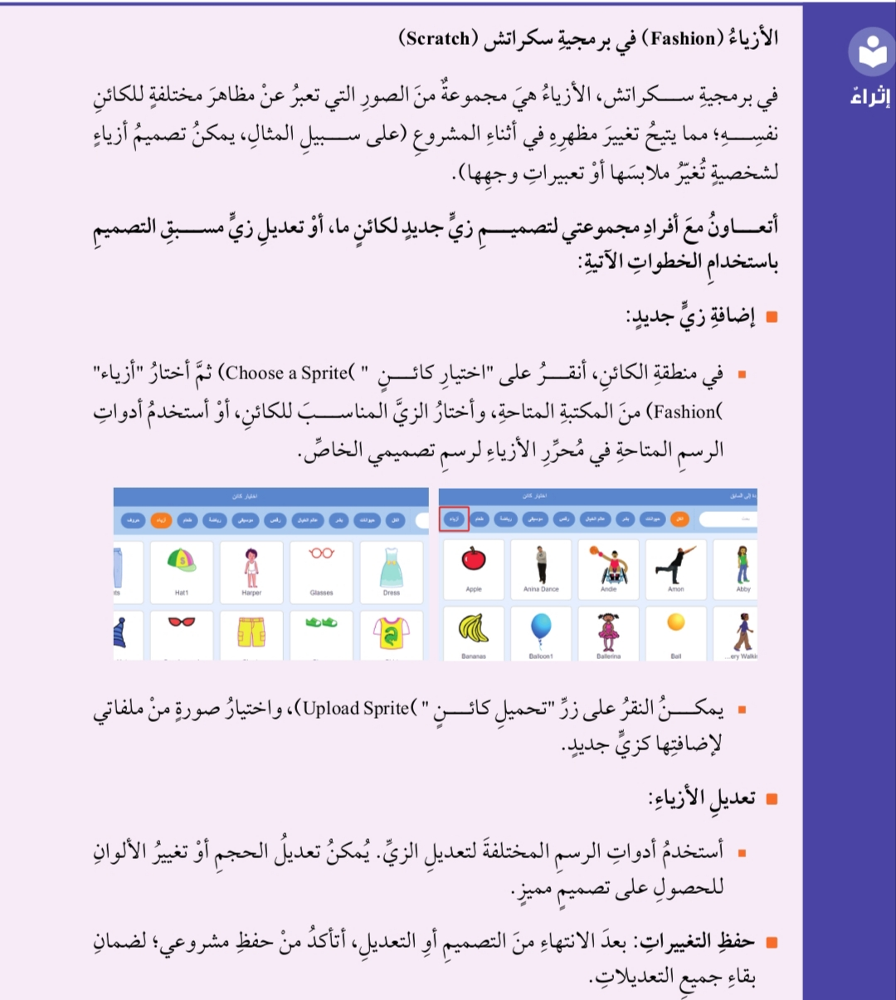
ثانيًا: الخلفيات (Backdrops)
وضح المقصود بالخلفيات (Backdrops)
عنصر أساسي في أي مشروع في برمجية Scratch، حيث تضيف عمقًا وسياقًا بصريًا للمشاهد، مما يعزز جاذبية المشروع، ويدعم القصة أو اللعبة التي نعمل على إنشائها.
طرق إضافة الخلفيات في سكراتش (Scratch)
هناك أربع طرق مختلفة لإضافة الخلفيات لمشروعك في Scratch. هذه الطرق مشابهة تمامًا لآلية إضافة الكائنات:
- الطريقة الأولى: اختيار خلفية من مكتبة سكراتش (Scratch).
- الطريقة الثانية: رسم خلفية جديدة.
- الطريقة الثالثة: تحميل خلفية من جهازي.
- الطريقة الرابعة: اختيار خلفية عشوائية.
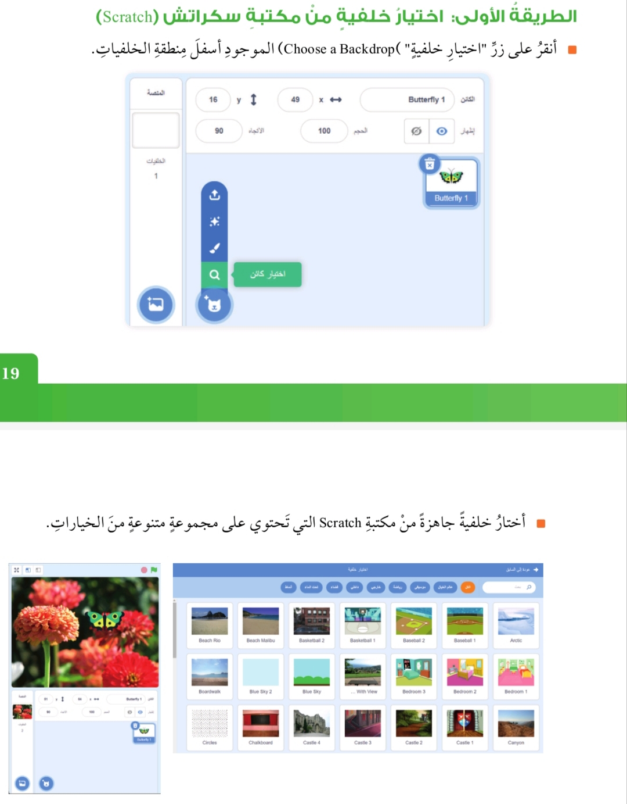
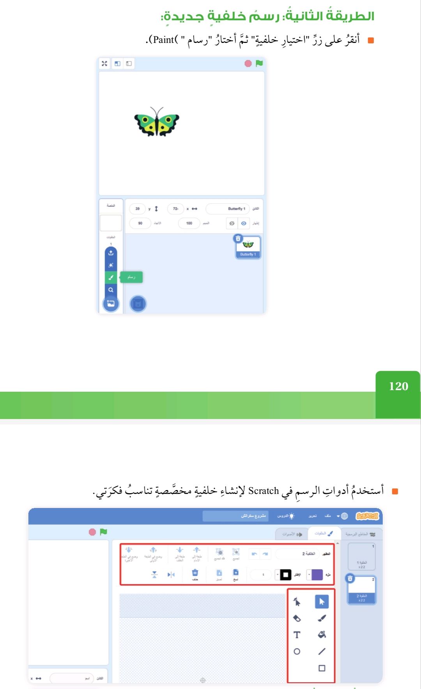
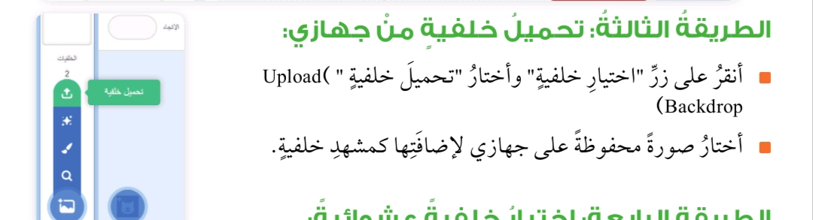
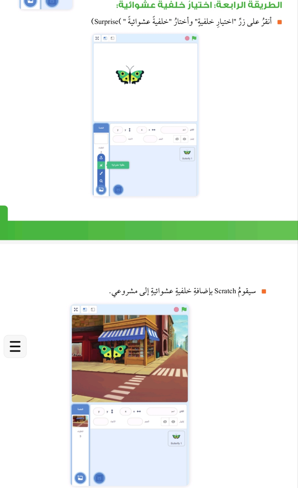
ثالثًا: الأصوات (Sounds)
وضح المقصود بالأصوات (Sounds) في سكراتش
وضح أهمية الأصوات في برمجة سكراتش
تعد الأصوات عنصرًا أساسيًا في برمجية Scratch، حيث يمكن استخدام الأصوات لإضافة طابع خاص، مثل جعل الشخصيات تتحدث، أو إضافة مؤثرات صوتية تبرز البيئة العامة؛ مما يزيد من حيوية المشروع ويجعله أكثر ديناميكية وتفاعلًا.
تساعد الأصوات في إضفاء الواقعية على المشروعات مثل استخدام صوت المطر في خلفية المشهد، وإثارة المشاعر من خلال موسيقى مبهجة أو مؤثرات درامية أو أصوات ممتعة للأطفال.
وتشجع الأصوات أيضًا على الإبداع؛ حيث تتيح للمستخدم حرية التعبير عن أفكاره بطريقة مسموعة وجذابة وتضفي لمسة فريدة على المشروع.
مصادر إضافة الأصوات
تتوفر مصادر عدة لإضافة الأصوات، وهي كما يأتي:
- الطريقة الأولى: اختيار صوت من مكتبة الأصوات.
- الطريقة الثانية: تسجيل الصوت مباشرة.
- الطريقة الثالثة: تحميل مقاطع صوتية.
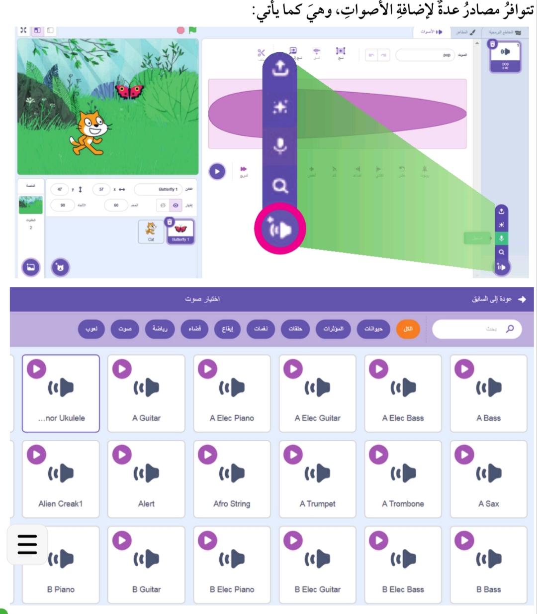
الطريقة الأولى: اختيار صوت من مكتبة الأصوات
وضح المقصود باختيار صوت من مكتبة الأصوات في برمجية سكراتش
توفر البرمجية مكتبة واسعة من الأصوات الجاهزة. ويمكن اختيار الصوت المناسب من بين هذه الأصوات، مثل مؤثرات الحركة، وأصوات الطبيعة، أو الموسيقى القصيرة.
خطوات اختيار صوت من مكتبة الأصوات
توفر البرمجية مكتبة واسعة من الأصوات الجاهزة. ويمكن اختيار الصوت المناسب من بين هذه الأصوات، مثل مؤثرات الحركة، وأصوات الطبيعة، أو الموسيقى القصيرة.
- أفتح مشروعي في برمجية سكراتش (Scratch) وأنتقل إلى تبويب "الأصوات" أعلى الشاشة.
- أنقر على أيقونة اختيار صوت (Choose a Sound) أسفل الشاشة.
- ستظهر مكتبة الأصوات المتاحة، أختار الصوت المناسب من المجموعة المتوافرة.
- أنقر على الصوت ليُضاف مباشرةً إلى مشروعي، وسأجده في تبويب "الأصوات".
الطريقة الثانية: تسجيل الصوت مباشرة
وضح المقصود بتسجيل الصوت مباشرة في برمجية سكراتش
تتيح البرمجية تسجيل الصوت باستخدام الميكروفون مباشرةً وإضافته إلى المشروع. وهذا يعد مفيدًا إذا أردت إضافة تعليق صوتي أو أصوات مخصصة تتناسب مع فكرة مشروعي.
خطوات تسجيل الصوت مباشرة
تتيح البرمجية تسجيل الصوت باستخدام الميكروفون مباشرةً وإضافته إلى المشروع، وهذا يعد مفيدًا إذا أردت إضافة تعليق صوتي أو أصوات مخصصة تتناسب مع فكرة مشروعي.
- أنتقل إلى تبويب "الأصوات" في مشروعي وأنقر على أيقونة "تسجيل (Record)".
- في واجهة التسجيل التي تظهر، أنقر على زر التسجيل وأبدأ بالتحدث أو إصدار الصوت المطلوب.
- أنقر على زر التوقف لإنهاء التسجيل.
- أعيد تشغيل الصوت للتحقق منه. إذا كان الصوت مناسبًا، أنقر على "حفظ (Save)" ليظهر ضمن مكتبة "الأصوات" الخاصة بمشروعي.
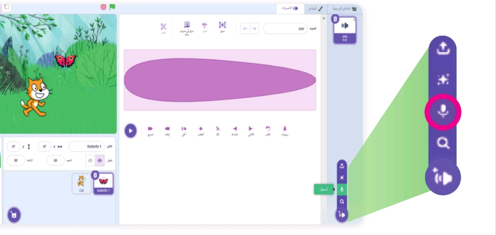
الطريقة الثالثة: تحميل مقاطع صوتية
وضح المقصود بتحميل مقاطع صوتية في برمجية سكراتش
يمكن تحميل مقاطع صوتية من جهاز الحاسوب الخاص بي أو من الإنترنت. تستخدم هذه الخاصية عادةً لإضافة موسيقى مميزة أو مؤثرات صوتية غير موجودة في المكتبة.
خطوات تحميل مقاطع صوتية
يمكن تحميل مقاطع صوتية من جهاز الحاسوب الخاص بي أو من الإنترنت. تستخدم هذه الخاصية عادةً لإضافة موسيقى مميزة أو مؤثرات صوتية غير موجودة في المكتبة.
- أفتح تبويب "الأصوات" في مشروعي.
- أنقر على أيقونة "تحميل صوت (Upload Sound)".
- أحدد موقع ملف الصوت على جهازي وأختار الملف المطلوب. سيتم تحميل الصوت وإضافته مباشرة إلى مشروعي.
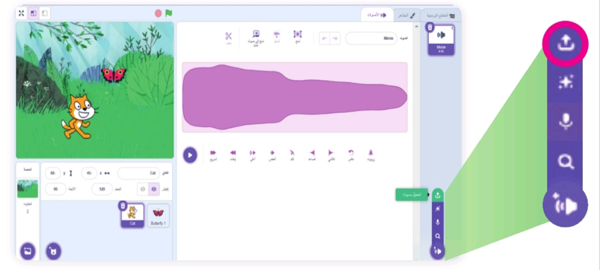
تحرير الأصوات في سكراتش
ويمكن أيضًا تحرير الأصوات؛ حيث تتيح البرمجية أدوات تحرير الصوت لتعديل المقاطع الصوتية، وتشمل:
- قص الصوت: إزالة أجزاء غير مرغوب فيها.
- تغيير سرعة الصوت: لتجعله أسرع أو أبطأ.
- إضافة تأثيرات: مثل التلاشي التدريجي أو التكرار.
إضاءة
توفر المصادر المجانية وحقوق النشر الإبداعية مكتبة واسعة من المحتوى الذي يمكن استخدامه بشكل قانوني وأخلاقي في مختلف المشروعات. تتيح هذه المنصات للمبدعين مشاركة أعمالهم، مثل الصور والموسيقى، ومقاطع الفيديو، بموجب شروط ترخيص مرنة.
يساعد استخدام هذه الموارد على:
-
العثور على محتوى عالي الجودة:
بحيث يمكن الوصول إلى مواد متنوعة تدعم فكرة المشروع.
-
احترام حقوق المؤلفين الأصليين:
من خلال الالتزام بشروط الترخيص والإشارة إلى المصدر عند الحاجة.
-
تعزيز الإبداع والتعاون:
حيث يشجع هذا النوع من التراخيص على مشاركة الأفكار والإسهام في تطوير مشروعات الغير.